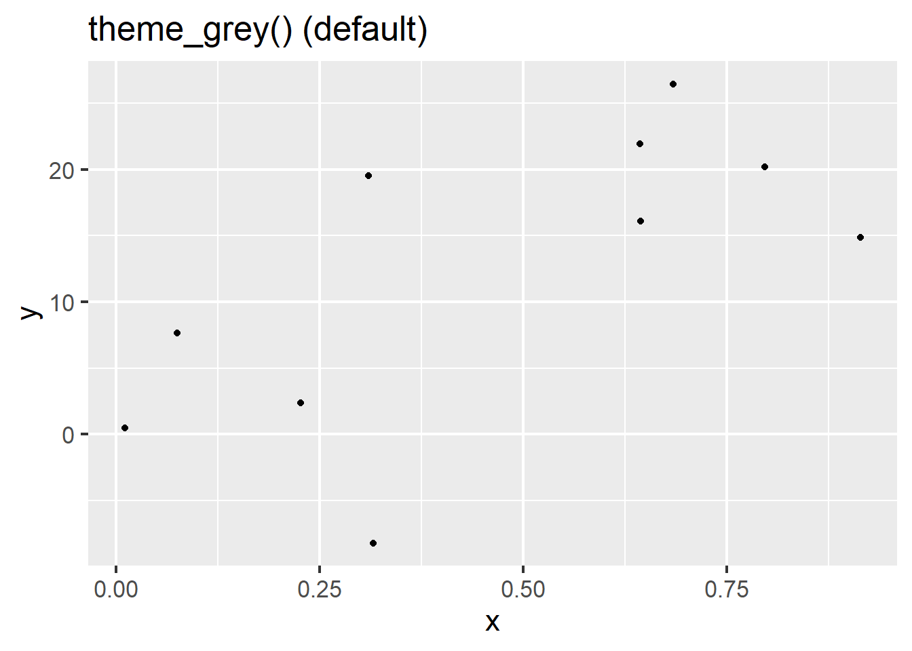
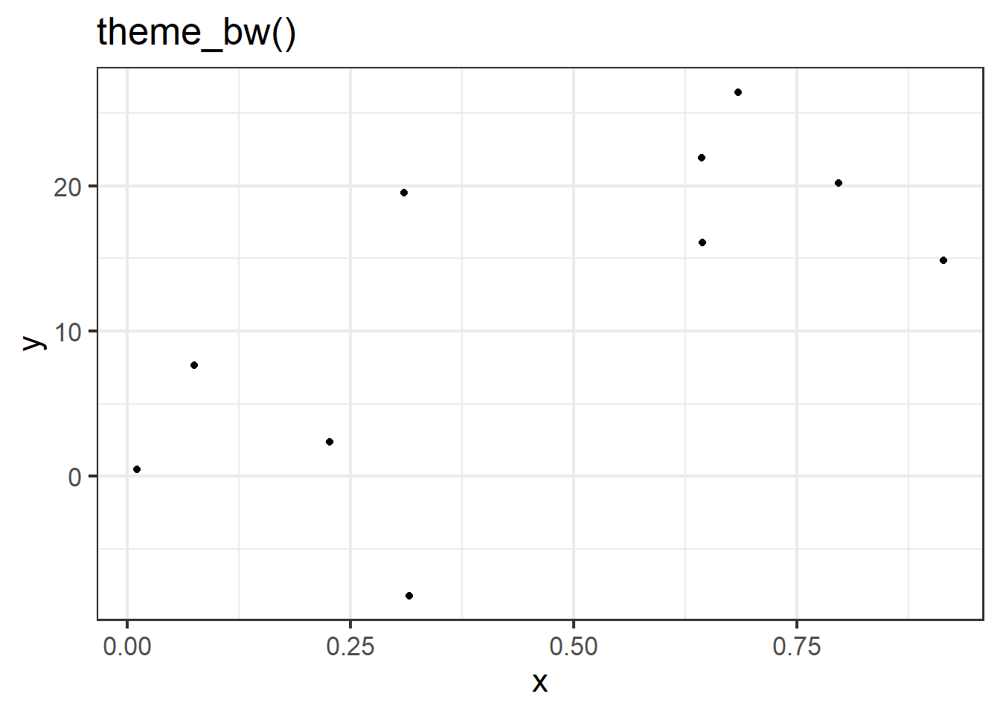
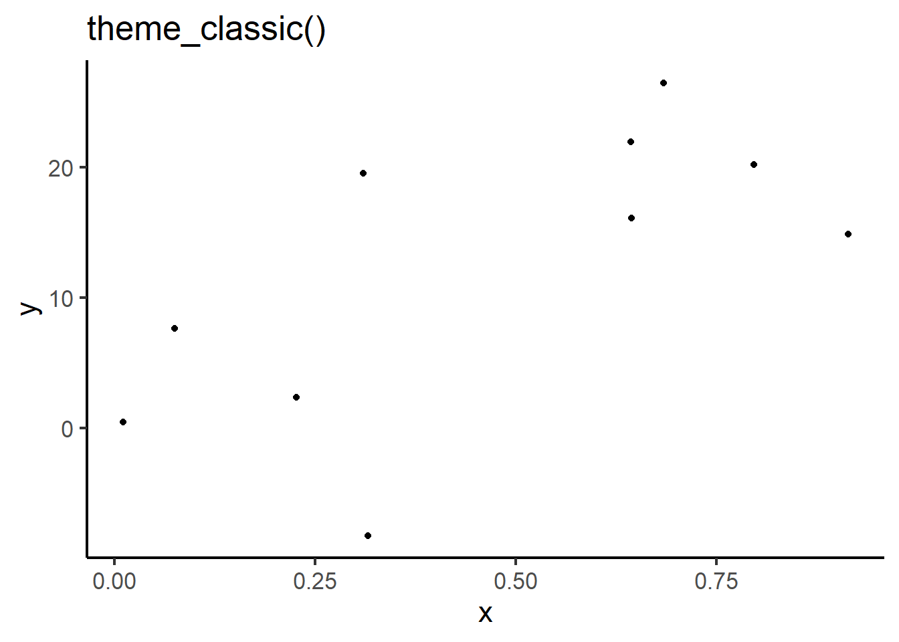
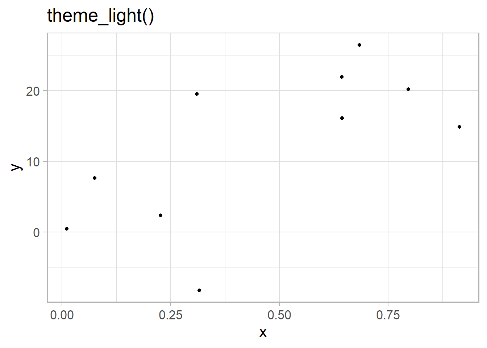
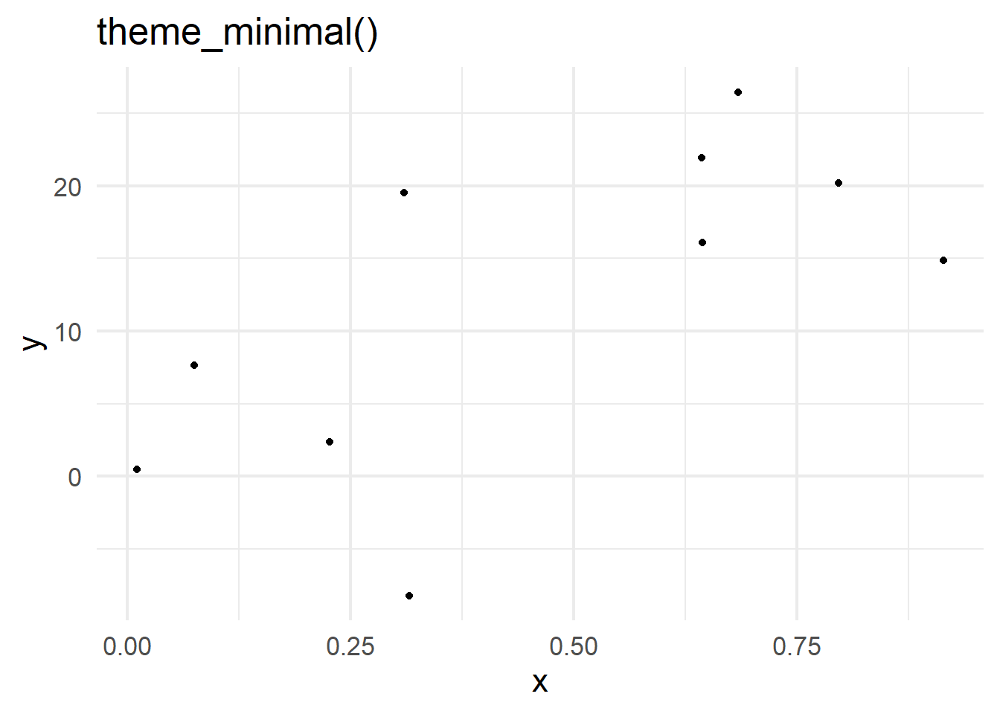
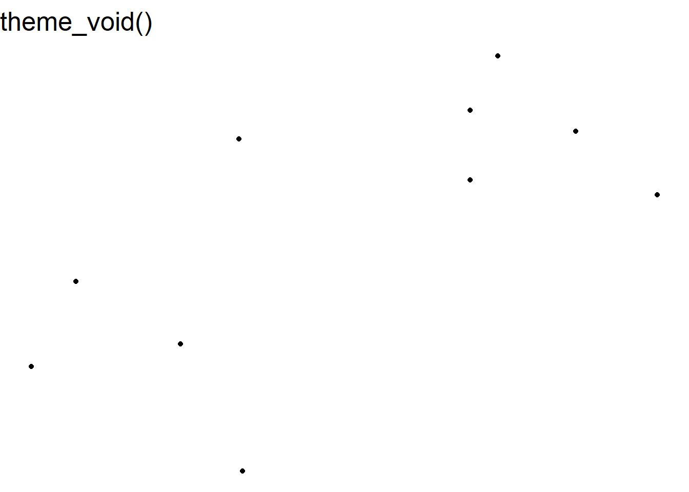

Data visualisation is a powerful tool with many important uses. First, visualisations allow us to explore the data, identify potential outliers and errors, or check that the variables behave in the way we would expect them to if they had been recorded correctly. Visualisations can also be used as an analysis tool, allowing us to identify trends in the data or differences between groups. Finally, visualisations can help to convey messages to an audience in a clear, concise way that is often more powerful than presenting them using numbers or text. In some cases, data visualisations can show results so clearly that further analysis is arguably unnecessary.
7.1 Choosing the most appropriate visualisation
The most appropriate choice of visualisation depends first and foremost on the goal, the context, and the audience of the visualisation. This choice will also be influenced (or restricted) by the type of variable(s) we wish to display and the number of variables. Common plots used to display combinations of different types of data are given in following table:
Table 7.1: Common data visualisations, classified by type and number of variables, presented with the geom function used to generate them.
Number of variables
Type of variables
Name of visualisation
R function
One variable
Categorical
Frequency table
table
Bar chart
geom_bar
Numerical
Histogram
geom_histogram
Spatial
Map
geom_sf
Temporal
Line plot
geom_line
Two variables
Two categorical
Frequency table
table
Stacked/side-by-side bar chart
geom_bar
One numeric, one categorical
Dot plot
geom_point
Box plot
geom_boxplot
Two numerical
Scatterplot
geom_point
> 2 variables
> 2 categorical
Table
table
2 numeric, one categorical, or > 2 numeric
Scatterplot with different colours/symbols/sizes
geom_point
For a more comprehensive list (including some non-standard graphs), visit the From data to viz website.
R is very flexible when it comes to visualising data and contains a wide variety of options to customise graphs. This section will focus on the tidyverse package ggplot2 and introduce some of the more commonly used graphical functions and parameters.
7.2 The ggplot2 package
TThe ggplot2 package implements a ‘grammar of graphics’ approach, in which graphs are composed of multiple layers. According to the grammar of graphics, all visualisations must contain three elements: the data, the information we wish to display, and some mapping, describing how to visualise the information.
To illustrate this, we can create a relatively simple visualisation which investigates the distribution of tenure types in the responses of the English Housing Survey (EHS). The most appropriate visualisation for this data would be a bar chart, where each bar represents the number of responses in each tenure type.
The first element required for a ggplot is the data. As the other two layers are missing, this will just produce a blank plot area:
ggplot(data = ehs_tidy)
The second element that is required for a ggplot is the information we wish to present. In this case, we want to show the tenure_type variable:
ggplot(data = ehs_tidy,aes(x = tenure_type))
Note
Any aspect of the visualisation that is determined by a variable in the data must be surrounded by the aes() wrapper. For example, the x-axis of the visualisation is determined by the tenure_type variable which is given by the argument aes(x = tenure_type). This will be explained in more detail later in this chapter.
The third and final element required to generate a visualisation in ggplot2 is some physical markings of the data. Most visual markings within ggplot are determined by a geom object. In this case, the visual representation of the data will be given by bars:
Although ggplot2 is part of the tidverse package, it uses a + symbol to add layers to visualisations rather than the pipe |> we have been using in other packages.
The plot may not be pretty, but it contains all three elements required by graphics. Additional layers will be introduced throughout this chapter to improve the design of this visualisation.
7.3 Exporting visualisations
Graphs appear in the plot tab in the bottom-right of the RStudio interface and can be opened in a new window using the icon. Graphs in this window can also be copied and pasted into other documents using the icon and selecting Copy to clipboard.
New graphs will replace existing ones in this window but all graphs created in the current session of R can be explored using the icons.
Graphs can be stored as objects using the <- symbol. These objects can then be saved as picture or PDF files using the ggsave function:
The ggsave function can be customised to change the file type, height, width and resolution (using the dpi argument).
TipHint
ggsave is compatible with a range of file types, including png, jpg, pdf and svg. Saving these visualisations in a vectorised format, such as svg allows graph elements to be edited outside of R. For example, after pasting an exported svg file into Microsoft Word, ungroup the image. This allows customisation of axes text, legends, background colours, etc.
External editing is not recommended as output would no longer be reproducible via R.
Exercise 7
Choose an appropriate visualisation to investigate the change in household disposable income between 2012 and 2024. Comment on your findings.
Caution
This exercise requires a visualisation that is appropriate for temporal numeric data. For inspiration, check Table 7.1.
This visualisation will require a continuous time variable on the x-axis that incorporates both the year and the quarter. If this does not currently exist, create it using the mutate function.
7.4 Aesthetic values
Any information that we are presenting that is taken from the data must be given within the aes wrapper. The argument each variable takes within this wrapper depends on the element of the graph which it defines. Additional variables can be added to a visualisation by using them to customise other elements of a graph, such as:
colour: determines the colour of points (for dot and scatterplots), lines (for line graphs), or borders (for bar charts, histograms and pie charts)
fill: determines the colour of bars or segments
shape: changes the symbols presented on dot and scatterplots
linetype: customises the type of line displayed (solid by default, but can be used to show dashed lines, etc)
size: determines the size of points
linewidth: changes the line width
alpha: controls the transparency of graph elements
These options can be set manually or used to add variables to a visualisation. For example, the distribution of tenure types could be compared between regions by changing the fill of these bars, converting the bar chart into a stacked bar chart. When these options are determined by a variable in the data, they should be added inside the aes wrapper. Options can also be adjusted manually when the arguments are added outside of the aes wrapper.
To convert the previous bar chart into a stacked bar chart, we define fill by the region variable. To make these distinctions easier to see, we can also add a black outline to the bars by manually setting colour:
ggplot(data = ehs_tidy) +geom_bar(aes(x = tenure_type, fill = region),colour ="black")
1
Define the x axis and fill inside aes
2
Manually define colour outside aes
Note
Aesthetic markings from the data specified in the ggplot function are applied to each geom in the visualisation. These aesthetics can also be specified in each geom separately.
Where aesthetics are consistent over multiple geom layers, it is better to specify them in the ggplot function to avoid repetitive coding.
Each geom has different arguments that can be customised to adapt visualisations. For example, geom_bar has the position argument which controls how additional groups are displayed. By default, this argument is set to "stack" which created a stacked bar chart as we saw in the last example. An alternative would be to set this to position = "dodge" which creates a side-by-side bar chart. Here, the tenure type bars are separated into smaller bars per region, but are displayed next to one another, rather than on top of each other:
ggplot(data = ehs_tidy) +# Define the x axis and fill inside aesgeom_bar(aes(x = tenure_type, fill = region),# Manually define colour outside aescolour ="black",# Show bars side-by-side instead of stackedposition ="dodge")
For a more comprehensive list of the options available for the geom you are interested in, check the help file (e.g. ?geom_bar).
Warning
Although it may be tempting to add many variables to the same visualisation, be sure that you are not overcomplicating the graph and losing important messages. It is better to have multiple clear (but simpler) visualisations than fewer confusing ones.
Exercise 8
Disposable income is the sum of labour income, non-labour income, and net taxes and benefits. Decompose the time series created in Exercise 7 to show how the contribution of these elements to total disposable income varied across time.
CautionExercise hint
Consider visualising this data as a stacked area chart rather than a line graph. The time variable will remain on the x-axis, the y-axis will be the total income, but the fill will be determined by the source of this income (labour, non-labour, or taxes and benefits). If this fill variable does not currently exist in the current wide format, consider how this could be pivoted to convert it into an alternative, more appropriate format.
7.5 Scale functions
Scale functions allow us to customise aesthetics defined in geom objects, such as colours and axes labels. They take the form scale_'aesthetic to customise'_'scale of variable’.
7.5.1 Customising axes
Scale functions can be used to customise axis titles, limits, breaks, and labels. The choice of scale function is determined by the type of variable displayed on the axis.
For example, if we wanted to investigate the distribution of gross incomes in the EHS data, we could generate a weighted histogram. The geom required for this visualisation would be geom_histogram, which also contains an optional aes argument weights:
Warning
Remember that the value 100000 is actually a grouped variable containing all household with a gross income of £100,000 or over.
We could improve the appearance of this histogram by changing the axis label, the colour scheme of the bars, and could remove the blank space between the graph area and the axes. As the gross income is a numberic variable, we could use the scale_x_continuous function to customise its appearance. Arguments to customise the x or y axes include:
name = to change the axis title
limits = c(...) sets the axis limits
breaks = c(...) defines tick marks
labels = c(...) attaches labels to break values. This can be combined with a function from the scales package (which is automatically loaded with ggplot2) to apply common formats to labels (see the package reference website for examples).
expand = expansion(0) removes the default blank space around the axis limits (this can also be used to add space by replacing 0 with either add = or mult = depending if this change is additive or multiplicative)
transform = transform the scale the axis is shown on. Transformations include reverse, sqrt, log, etc. For a full list, view the appropriate help file
Manually change the outline and fill of bars to improve the appearance
2
Change the axis title to remove underscore, add capitalisation, and add scale
3
Control the blank space between the axis and bars (add 750 to either side)
4
Format axis labels to have a comma every 3 digits (e.g. convert 100000 to 100,000) to improve readability
5
Add axis breaks every 250,000 households (look up the ?seq help file to learn more about how this can be customised)
7.5.2 Customising colour scales
There is a wide range of options available for customising colour and fill aesthetics within ggplot2. The choice will depend on the type of variable determining colours (whether it is numeric or categorical) and whether we want to use a pre-defined colour palette or manually specify our own.
Warning
When choosing a colour palette, be sure that all colours are distinct to everyone, including those with colour-vision deficiencies. To help check this is the case, use a colour blindness simulator to see what a visualisation looks like under different types of colour blindness.
Avoid potentially harmful stereotypes when choosing colours to represent groups, and avoid cyclical palettes, such as the rainbow palette, to avoid confusion between high and low values.
7.5.2.1 Pre-built colour palettes
There are thousands of colour palettes that are available within R. Some of them are included within the ggplot2 package, but there are many others that require additional package installation. This website gives a list and preview of all palettes currently available.
Colour palettes included within the ggplot2 package (and therefore don’t require any additional packages) are the viridis and colorbrewer scales. Both contain palettes that are colourblind friendly and can be used for either continuous or discrete scales.
For continuous data, use scale_colour_viridis_c or scale_colour_distiller to select one of the in-built colour palettes (replace colour with fill when dealing with bars). For discrete or categorical variables, use scale_colour_viridis_d or scale_colour_brewer instead.
7.5.2.2 Manually defining a colour palette
There are various way of creating your own colour palette if you (or the department you are part of) have preferred colours.
For discrete or categorical variables, the scale_colour_manual (or scale_fill_manual) function allows colours to be specified using the values argument.
Style tip
R contains a list of 657 pre-programmed colours that can be used to create palettes (run colours() in the console for a full list).
Hexadecimal codes can also be included instead in the form #rrggbb (where rr (red), gg (green), and bb (blue) are numbers between 00 and 99 giving the level of intensity of each colour).
TipHint
Where a colour palette will be used across multiple plots, defining this list of colours as a vector and then entering this into scale_fill_manual will reduce repetitive coding.
When including a continuous variable, palettes can be created using gradients. The choice of function depends on the number of gradients required:
scale_colour_gradient / scale_fill_gradient: specifies a two colour gradient based on a low and high value
scale_colour_gradient2 / scale_fill_gradient2: specifies a three colour gradient based on a low, mid (defined by the midpoint argument), and high value
scale_colour_gradientn / scale_fill_gradientn: specifies a palette with more than three colours, customised by setting colours and corresponding values.
7.6 Annotations and titles
Besides the layers required to generate a visualisation, additional layers can be added enhance the messages given by the data, drawing readers’ attention to interesting findings and the story you are trying to tell.
7.6.1 Plot, axes and legend titles
Although axis and legend labels can be updated within scale functions, the labs function exist as an alternative. This function also allows us to add titles, subtitles and footnotes to visualisations:
ggplot(data = ehs_tidy) +geom_bar(aes(x = tenure_type, fill = region),colour ="black") +scale_fill_manual(values = region_palette) +labs(title ="This is a title", subtitle ="Here is a subtitle",x ="Tenure type", y ="Number of households",fill ="Region")
Style tip
\n can be used to specify line breaks within the labs arguments.
Specifying any of the arguments in labs as NULL (no speech marks) removes the title from the visualisation.
Mathematical equations can be added into labs arguments by surrounding the text with the quote() function. Check ?plotmath for examples of equation syntax.
7.6.2 Annotations
Annotations can be useful to include context to visualisations and draw attention to important messages. Annotations can include text labels, reference lines and shading, amongst others. ggplot2 contains a number of geom objects that can be used to add annotation layers to a visualisation. As these annotations are added within geoms, they can be specified using values from the data (when wrapped in the aes function) or manually. This section will cover some common annotations but there are many others available (see the ggplot ebook for a more comprehensive list).
7.6.2.1 Text labels
Text labels can either be added using geom_text or geom_label (which adds text surrounded by a rectangular box, making it easier to read on busy backgrounds). Aesthetics such as x, y and colour can be used to customise text labels (either manually or from the data). Other aesthetics that can be added include:
label defines the text displayed
angle rotates the text
family defines the font
fontface can be changed to make text "bold" or "italic"
ggplot(data = ehs_tidy) +geom_histogram(aes(x = gross_income, weight = weighting),colour ="black", fill ="thistle") +scale_x_continuous(name ="Gross income (£)", expand =expansion(add =750), labels = scales::label_comma()) +scale_y_continuous(name ="Total households", expand =expansion(mult = .01), breaks =seq(0, 1750000, by =250000), labels = scales::label_comma()) +geom_text(x =75000, y =1250000, label ="Gross income \n over £100,000") +geom_label(x =50000, y =1500000, label ="Italicised label",fontface ="italic")
Adding text through geoms will work but notice that the annotations looks a little blurry on the text. This is because geom layers take the data into account and assume that you want the same number of layers/markings as observations in the data. This means that rather than adding a single text or label, ggplot is actually adding 9752. To overcome this, we can use the annotate function instead.
7.6.3 Annotate function
The annotate function will add single geom layers to a visualisation while disregarding the rest of the data. This is useful when adding annotations such as text, labels, shapes or arrows. annotate functions require the same arguments as the corresponding geom, with an additional argument that specifies the geom we require.
For example, the blurry labels on our previous plot can be fixed by replacing geom_text and geom_label with annotate functions:
ggplot(data = ehs_tidy) +geom_histogram(aes(x = gross_income, weight = weighting),colour ="black", fill ="thistle") +scale_x_continuous(name ="Gross income (£)", expand =expansion(add =750), labels = scales::label_comma()) +scale_y_continuous(name ="Total households", expand =expansion(mult = .01), breaks =seq(0, 1750000, by =250000), labels = scales::label_comma()) +annotate("text", x =75000, y =1250000, label ="Gross income \n over £100,000") +annotate("label", x =50000, y =1500000, label ="Italicised label",fontface ="italic")
Text labels can be combined with lines and arrows to make them clearer, using the curve (for curved lines) or segment (for straight lines) geoms. Both contain the optional argument arrow which adds an arrow to the curved line (this must be defined within the arrow function, which can be used to adjust the size or shape of the arrow):
ggplot(data = ehs_tidy) +geom_histogram(aes(x = gross_income, weight = weighting),colour ="black", fill ="thistle") +scale_x_continuous(name ="Gross income (£)", expand =expansion(add =750), labels = scales::label_comma()) +scale_y_continuous(name ="Total households", expand =expansion(mult = .01), breaks =seq(0, 1750000, by =250000), labels = scales::label_comma()) +annotate("segment", x =87000, xend =98000, y =1250000,arrow =arrow(length =unit(.25, "cm"))) +annotate("text", x =75000, y =1250000, label ="Gross income \n over £100,000")
Other useful annotations that can enhance visualisations’ messages include:
rect: draws a rectangle that can be used to highlight a section of the graph
geom_vline, geom_hline and geom_abline: adds a vertical, horizontal, or diagonal reference line across the entire graph area (these geoms are not compatible with the annotate function)
7.7 Theme functions
The theme function modifies non-data components of the visualisation. For example, the legend position, label fonts, graph background, and grid lines. There are many options that can be adjusted within the theme function (see the help file ?theme for a complete list). Often, it is efficient to begin with a pre-built theme and tweak elements that do not suit our purpose.
7.7.1 Pre-built themes
There are 8 complete themes programmed in the ggplot2 package. These are:






Style tip
Although pre-built theme functions do not require arguments to run, they all contain the optional argument base_size which set the default font size (defaulted to 11). To ensure visualisations are as accessible and inclusive as possible, ensure this is set to at least 12 for printed graphs or 36 for presentations.
7.7.2 Customising themes
Individual elements of a visualisation’s theme can be customised within the theme functions. Many elements that can be customised using the theme require an element wrapper. This wrapper is determined by the type of object that we are customising, the four options are:
element_text when customising text, e.g. axis titles and labels
element_rect when customising backgrounds, e.g. the graph area
element_line when customising lines, e.g. gridlines
element_blank to remove elements
Elements that do not require these wrappers are often related to positioning. A common example of this is the legend.position argument which can be set to "left", "right" (default), "top", "bottom", or removed using "none".
For example, the histogram we have been building showing household gross income can be customised using theme functions:
histogram_minimal <-ggplot(data = ehs_tidy) +geom_histogram(aes(x = gross_income, weight = weighting),colour ="black", fill ="thistle") +scale_x_continuous(name ="Gross income (£)", expand =expansion(add =1000), labels = scales::label_comma()) +scale_y_continuous(name ="Total households", expand =expansion(mult = .01), breaks =seq(0, 1750000, by =250000), labels = scales::label_comma()) +annotate("segment", x =87000, xend =98000, y =1300000,arrow =arrow(length =unit(.25, "cm"))) +annotate("label", x =75000, y =1300000, label ="Gross income \n over £100,000") +theme_minimal()histogram_minimal
Set the y-axis text size to 12 and rotate them 45 degrees
4
Add major grid lines
5
Add dashed minor grid lines
Style tip
Good visualisations require a middle ground between overly minimal design, which can make interpretation difficult, and charts overloaded with clutter. The bold and dashed grid lines on this visualisations are a good example of where ‘chart junk’ can distract from the data.
Visualisations should strive to make the data are the most important part of the graphic, whilst ensuring there is sufficient context provided by non-data elements.
7.7.3 Creating a theme
One benefits of using theme functions is that visualisations will remain consistent in terms of their design. Custom themes can be saved as functions and added to ggplot objects in place of the in-built themes. For example,
To create our own function in R, we first give it a name and attach function() followed by curly brackets {}, with the function defined inside those brackets.
For example, to create our own theme function, called theme_dataviz, which sets the title font size to 18, the axis and legend titles to size 14, the axis and legend text to size 12, adds just gridlines to the y-axis, and changes the background colours, we use the following:
The function theme_dataviz will now appear in the Environment window and can be added to ggplot objects:
ggplot(data = ehs_tidy) +geom_bar(aes(x = tenure_type, fill = region),colour ="black",position ="dodge") +scale_fill_manual(name ="Region", values = region_palette) +scale_x_discrete(labels = scales::label_wrap(12)) +labs(x ="Tenure type", y ="Number of households") +theme_dataviz()
Creating a personalised theme ensures that visualisations are consistent, whilst keeping code concise and reducing repetition.
7.8 Facet functions
Faceting allows us to divide a plot into subplots based on some grouping variable within the data. This allows us to show multiple variables in the same visualisation without risking overloading the plot and losing the intended message.
For example, we could compare the relationship between gross income and tenure type (shown using a boxplot) between regions by faceting the graph by region using the facet_wrap function:
Warning
Remember that the value 100,000 actually represents anyone earning £100,000 or more. To avoid skewing the data, we will remove these values and investigate trends below this threshold.
ehs_tidy |>filter(gross_income !=100000) |>ggplot() +geom_boxplot(aes(x = tenure_type, y = gross_income)) +scale_x_discrete(labels = scales::label_wrap(8)) +scale_y_continuous(labels = scales::label_comma()) +labs(x ="Tenure type", y ="Gross income (£)") +facet_wrap( ~ region) +theme_dataviz()
1
Remove gross income >= £100,000
2
We do not need to specify data, it is already passed through the pipes
3
Wrap tenure type labels to avoid overlap
Exercise 9
Return to the visualisation showing the change in disposable income over time, decomposed into different income streams (labour, non-labour, and taxes and benefits). Adapt the visualisation to ensure it is accessible, compelling, and clear. This can include:
Adding an appropriate title and caption with data source information
Adapting the colour scheme to make the differences more obvious
Adding labels to commmunicate important findings to the reader
Adjusting the theme to ensure text is large enough, values are clear but not overwhelmed by ‘chart junk’
Save this visualisation and add it into a Word document, along with a brief interpretation of the visualisation.
CautionExercise hint
Add layers to the previous geom_area from exercise 8. Use the labs function to add a title and caption, and to ensure axes and legend titles are clear. Use scale_fill_manual to manually enter colours or scale_fill_brewer to choose a pre-existing palette.
Consider adding text labels to each element of the disposable income to give the percentage split represented by each element.
Ensure your theme sets all text and titles to size 12 or larger, adds enough grid lines to make values readable, but not so many that it distracts from the data.

 icon and selecting Copy to clipboard.
icon and selecting Copy to clipboard.